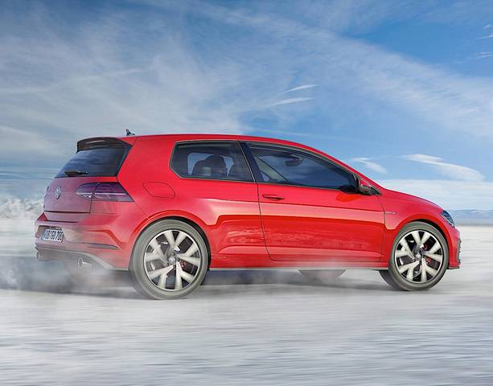

История Volkswagen началась осенью 1933 года в одном из залов отеля «Кайзерхоф» (нем. Kaiserhof) в Берлине. Собеседников было трое: Адольф Гитлер (нем. Adolf Hitler), Якоб Верлин
(нем. Jacob Werlin), представитель «Daimler-Benz» и Фердинанд Порше (нем. Ferdinand Porsche). Гитлер выдвинул требование: создать для немецкого народа крепкий и надёжный автомобиль
стоимостью не более 1000 рейхсмарок. Также, автомобиль должен был собираться и на новом, олицетворяющем новую Германию, заводе. На листке бумаги Гитлер набросал эскиз, обозначил основные
пункты программы и попросил назвать имя конструктора, кто будет нести ответственность за исполнение правительственного заказа. Якоб Верлин предложил кандидатуру Фердинанда Порше. Будущий
автомобиль так и назвали — «Volks-Wagen» («народный автомобиль»).
17 января 1934 года Фердинанд Порше переслал чертежи прототипа «народного автомобиля», созданного на базе разработанного ранее Porsche Typ 60, в Рейхсканцелярию Германии.
В июне 1934 года был подписан контракт между RDA (нем. Reichsverband der Automobilindustrie) или «Имперской автомобильной ассоциацией», и «Dr. Ing. h.c. F. Porsche GmbH»
(Konstruktionen und Beratungen für Motoren und Fahrzeugbau) — компанией Фердинанда Порше, на разработку трёх прототипов «народного автомобиля». Месячный бюджет проекта составил 20 тыс.
рейхсмарок при ограничении по времени — 10 месяцев на все разработки. В качестве основных характеристик должны быть учтены следующие данные: 5 посадочных мест, ширина колеи — 1200 мм,
расстояние между осями — 2500 мм, максимальная мощность — 26 л. с., максимальные обороты — 3500 об/мин, неснаряжённый вес — 650 кг, цена при продаже — 1550 рейхсмарок, максимальная скорость —
100 км/ч, максимальный уклон подъёма — 30 %, средний расход топлива — 8 литров на 100 км.
Несмотря на уже имевшиеся конструкции и опыт, необходимость уложиться в положенные рамки затянула работы на два года. Прототипы были готовы только в сентябре 1936 года: двухдверный V1,
кабриолет V2 (по заказу Гитлера) и четырёхдверный V3. 50 тыс. километров испытательного пробега не выявили у машин каких-либо серьёзных недостатков, и Порше дали заказ на последующие 30
прототипов, которые были произведены на заводе Daimler-Benz. Тестирование новых прототипов возложили на DAF (нем. Deutsche Arbeitsfront) (Германский Трудовой Фронт) — нацистскую профсоюзную
организацию. А контроль тестирования и принятие окончательного решения по его (тестирования) итогам осуществляли непосредственно сотрудники СС (нем. SS или Schutzstaffel).
28 мая 1937 года основана компания «Gesellschaft zur Vorbereitung des Deutschen Volkswagens GmbH» («Общество с ограниченной ответственностью по подготовке Немецкого народного автомобиля»)
и, уже позже, 16 сентября 1938 года, переименована в Volkswagenwerk GmbH.
26 мая 1938 года был заложен первый камень на строительстве завода Volkswagen рядом с городом Фаллерслебен. В церемониальной речи Гитлер озвучивает имя будущего «народного автомобиля» —
KdF-Wagen, названного в честь KdF (Kraft durch Freude) — нацистской общественной организации, вложившей порядка 50 млн рейхсмарок в строительство завода. В том же году было начато
строительство городка для проживания работавших на заводе Volkswagen — Stadt des KdF-Wagens. Название в 1945 году изменили на Вольфсбург (по имени находившегося по соседству замка Вольфсбург).
В 1939 году были выпущены две модели для демонстрации производственных возможностей завода: V38s («пробная модель») и V39s («демонстрационная модель»). На них уже были заметны сделанные изменения
в конструкции, как то улучшенные дверные петли и увеличенные дверные ручки, наличие двух задних окон в салоне и т. п. Но KdF-Wagen так и не смог стать автомобилем массового производства по причине
загруженности промышленности выполнением крупных военных заказов и начала Второй мировой войны.
Volvo Cars был приобретён в 1999 году. 29 марта 2010 года китайская компания Zhejiang Geely объявила о достижении договорённости о приобретении Volvo Cars у компании Ford Motor
за 1,8 млрд долларов. Все интеллектуальные права на разработки шведской компании, как планировалось, остались у Volvo, а Geely получило к ним полный доступ. Сделка была закрыта в начале
августа 2010 года.В 1938 году был разработан прототип армейского полноприводного автомобиля VW Typ 82 (Kübelwagen), запущенный в производство как VW Typ 82. Кузов был собран из тонких жестяных
продольно усиленных листов, имел четыре двери, складное лобовое стекло и брезентовую откидную крышу. Всего было выпущено более 50 тыс. автомобилей. Они использовались во всех войсках Германии
до окончания Второй мировой войны для перевозки личного состава, подвоза боеприпасов и топлива, эвакуации раненых и в качестве передвижных мастерских. На базе VW Typ 82 было создано более 30
модификаций многоцелевых автомобилей.
В 1940 году на базе VW Typ 82 был разработан прототип автомобиля-амфибии — VW Typ 128 Schwimmwagen. В 1941 году 30 амфибий, произведённых на заводе в Вольфсбурге, поступили в армейские инженерные
части, где получили хорошие отзывы. В этом же году Фердинанд Порше получил заказ на дальнейшую модификацию автомобиля. Модель VW Typ 166 Schwimmwagen (или Vorserienschwimmwagen) был короче, легче
и манёвреннее предшественника и выпускалась на заводе Daimler-Benz в Штутгарте. За годы войны (1941—1945) было выпущено порядка 15 тыс. амфибий.
